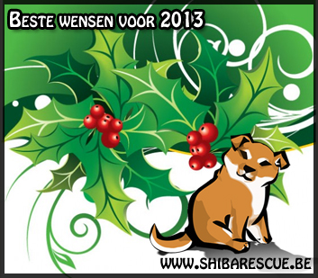

Laatste nieuws pagina 2013
Laatste updates:
31-12-2013 |
Akita Zino is niet meer beschikbaar. Lani is geplaatst |
28-12-2013 |
Nieuwe Akita herplaatser Nikita + Tosa Bas is geplaatst!! |
25-12-2013 |
Nieuwe Akita herplaatser Bumba |
20-12-2013 |
Nieuwe Akita herplaatser Fellow |
20-12-2013 |
Akita (pup) herplaatser Balou heeft zijn nieuwe thuis |
18-12-2013 |
Nieuwe Shiba herplaatser Ziggy |
17-12-2013 |
Nieuwe Akita (pup) herplaatser Balou |
17-12-2013 |
Akita Packo en kruising Shabi zijn geplaatst |
13-12-2013 |
Nieuwe Akita herplaatsers Mitu en Lani + Shiba Timo (In Timo is al interesse) |
11-12-2013 |
Shiba Milo is geplaatst |
06-12-2013 |
Nieuwe Akita herplaatser Zino |
04-12-2013 |
Shiba Zoa heeft een nieuwe thuis |
28-11-2013 |
Nieuwe Shiba herplaatser Milo |
24-11-2013 |
Nieuwe Akita kruising Laika |
24-11-2013 |
Shiba's Kenji en Sheeva hebben een nieuwe thuis |
17-11-2013 |
Akita kruising Nesta, de kruising Akita pup en American Akita Chica zijn geplaatst |
15-11-2013 |
Nieuwe link op de linkpagina: Gezonde pups |
14-11-2013 |
Akita Hachico is geplaatst + Kruising Akita pup terug beschikbaar |
10-11-2013 |
Nieuwe herplaatsers Zoa, Zacky, Zorro, Nesta en Zeus |
10-11-2013 |
Akita Hatchy is geplaatst |
04-11-2013 |
Akita herplaatser Sweety heeft al haar gouden mand gevonden |
04-11-2013 |
We krijgen geen contact met het asiel van Sara. Zij is dus niet meer beschikbaar |
02-11-2013 |
Nieuwe link op de linkpagina: Shibalog |
02-11-2013 |
Nieuwe Akita herplaatser Sweety |
02-11-2013 |
Akita Ozzy is geplaatst en Shiba Timo heeft ook zijn thuis |
31-10-2013 |
Nieuwe Akita herplaatser Hachiko |
27-10-2013 |
Nieuwe Shiba herplaatser Sheeva |
27-10-2013 |
De twee resterende pups zijn ook geplaatst |
15-10-2013 |
Akita Hatchy is terug ter herplaatsing - Aya en Cjay zijn geplaatst |
15-10-2013 |
Shiba Bibi staat niet meer op de site van de opvang, wij duimen voor haar |
12-10-2013 |
Akita Asta en Jack hebben een nieuwe thuis + nieuwe herplaatser Aya |
09-10-2013 |
Shiba Nina heeft haar warme mand gevonden |
09-10-2013 |
Nieuwe Akita/herder herplaatser Shabi |
08-10-2013 |
Akita Hatchy heeft zijn nieuwe thuis |
06-10-2013 |
Nieuwe herplaatsers Cjay, Hachty en zes pups - Akita kruising Lucy is geplaatst |
02-10-2013 |
Nieuwe Akita herplaatser Jack |
30-09-2013 |
Nieuwe Akita herplaatsers Ozzy en Packo |
14-09-2013 |
Nieuwe Alaskan Malamute herplaatser Beyaz |
13-09-2013 |
Shiba Kiyoshi en Akita Pascha zijn geplaatst |
11-09-2013 |
Nieuwe Shiba herplaatser Yoshi |
10-09-2013 |
Akita Hachiko, American Akita Lana, Shiba Kina en Shiba Spike zijn geplaatst |
27-08-2013 |
Nieuwe Akita (kruising) herplaatser Lucy |
26-08-2013 |
Japanse Chin Sensi is geplaatst |
23-08-2013 |
Nieuwe Shiba herplaatser Naoki |
21-08-2013 |
Nieuwe Shiba herplaatsers Bibi en Kina is terug ter herplaatsing |
20-08-2013 |
Nieuwe American Akita herplaatser Chica |
19-08-2013 |
Shiba Cleo is geplaatst |
16-08-2013 |
Kishu Kyo heeft een nieuwe thuis |
13-08-2013 |
Japanse Chin Mabel en Akita Shyra hebben een nieuwe thuis |
12-08-2013 |
American Akita Mikey is geplaatst |
07-08-2013 |
Nieuwe herplaatsers Shyra, Mabel en Sensi |
06-08-2013 |
Nieuwe Shiba herplaatsers Kiyoshi en Spike |
04-08-2013 |
Shiba Kenji zit in het asiel en is terug beschikbaar voor de ideale thuis... |
04-08-2013 |
Akita Max en Tosa Bobby hebben hun nieuwe thuis gevonden |
01-08-2013 |
Nieuwe Shiba herplaatser Cleo |
01-08-2013 |
Shiba Kina is geplaatst - Zij is de 300e gelukkige herplaatser op de Shiba rescue!  |
28-07-2013 |
Shiba Raisa en Akita Aisha zijn geplaatst |
25-07-2013 |
Nieuwe herplaatser, Kyo de Kishu. De eerste Kishu in onze bemiddeling |
22-07-2013 |
Shiba Sushi is geplaatst + Nieuwe Shiba herplaatser Raisa |
20-07-2013 |
Akita "Shiba" is geplaatst |
19-07-2013 |
Nieuwe Akita herplaatser Hachiko + nieuwe Shiba herplaatser Kina |
16-07-2013 |
Shiba Naveen is geplaatst |
09-07-2013 |
Nieuwe Akita herplaatsers Pascha en Shiba |
08-07-2013 |
Nieuwe Akita herplaatser Aisha |
07-07-2013 |
Akita Layka heeft een nieuwe thuis |
04-07-2013 |
Nieuwe American Akita herplaatser Mickey |
01-07-2013 |
Nieuwe Akita herplaatser Szem |
30-06-2013 |
Shiba Snoozy is geplaatst |
26-06-2013 |
Nieuwe Akita herplaatser Layka |
23-06-2013 |
Shiba kruising Prutske heeft al een nieuwe thuis |
22-06-2013 |
Nieuwe Shiba/cv herplaatser Prutske |
20-06-2013 |
Shiba Zicko heeft een nieuwe thuis, zo ook de Akita uit het asiel van Ninove |
15-06-2013 |
Nieuwe Shiba herplaatser Zicko en nieuwe Akita herplaatser Asta |
11-06-2013 |
Akita Kira en Yuki zijn geplaatst |
06-06-2013 |
Nieuwe Akita herplaatser "Yuki" bij de Andere rassen |
28-05-2013 |
Nieuwe herplaatser "Sara" Bij de Andere rassen |
28-05-2013 |
Nieuwe Shiba herplaatser Snoozy |
27-05-2013 |
Nieuwe Akita herplaatser bij de Andere rassen |
23-05-2013 |
Shiba Taico, kruising Bas en Dingo zijn geplaatst |
07-05-2013 |
Nieuwe Akita herplaatser Max |
05-05-2013 |
Japanse Chin Moppie is geplaatst |
04-05-2013 |
Shiba kruising Snoopy is geplaatst |
01-05-2013 |
Shiba kruising Rocky is geplaatst |
29-04-2013 |
Shiba/Akita kruising Chyro en Shiba Jejo zijn geplaatst |
26-04-2013 |
Basenji Noeke en kruising Curi zijn geplaatst |
24-04-2013 |
Nieuwe Kruising herplaatser Rocky bij de Shiba's |
23-04-2013 |
Nieuwe Kruising herplaatser Bas bij de Shiba's |
22-04-2013 |
Nieuwe Kruising herplaatser Dingo bij de "Andere rassen" |
20-04-2013 |
Akita Milo en Shiba kruising Jiro zijn geplaatst |
17-04-2013 |
Nieuwe Akita herplaatser Milo + nieuwe herplaatsers Curi en Jiro (kruising Shiba) |
16-04-2013 |
Nieuwe Shiba kruising herplaatser Snoopy + Akita pup Newton is geplaatst |
15-04-2013 |
Nieuwe Shiba herplaatser Boyka |
14-04-2013 |
Umi is geplaatst + Nieuwe Basenji herplaatser Noeke |
11-04-2013 |
Nieuwe Japanse Chin herplaatser Moppie |
11-04-2013 |
Nieuwe link op de linkpagina: Dogtails.nl |
07-04-2013 |
Nieuwe Akita herplaatser Newton |
07-04-2013 |
Shiba Vicky en Ichi hebben een nieuwe thuis |
06-04-2013 |
Nieuwe Shiba herplaatser Naveen |
02-04-2013 |
Shiba Chibi is geplaatst |
31-03-2013 |
Shiba Quando is niet meer ter herplaatsing via ons |
26-03-2013 |
Shiba's Maiko en Franco zijn geplaatst |
23-03-2013 |
Shiba Milow is geplaatst |
22-03-2013 |
De vermiste shiba, Kaylee, is terecht! |
17-03-2013 |
Nieuwe Shiba herplaatser Vicky |
17-03-2013 |
Shiba Kenji is geplaatst |
16-03-2013 |
Nieuwe herplaatser Umi bij andere rassen + Akita Saya is geplaatst |
15-03-2013 |
Nieuwe Shiba herplaatser Maiko |
13-03-2013 |
Nieuwe Shiba herplaatser Franco en Shiba Hachiko is al geplaatst |
12-03-2013 |
Nieuwe Shiba herplaatser Hachiko + Nieuwe Akita herplaatser Kira |
09-03-2013 |
Nieuwe Shiba herplaatsers Ichi en Quando + Nieuwe Akita herplaatser Avanti |
05-03-2013 |
Shiba Minnie is geplaatst |
02-03-2013 |
Nieuwe Shiba herplaatser Kenzo |
02-03-2013 |
Shiba Daiko is geplaatst |
01-03-2013 |
Nieuwe Shiba herplaatser Minnie |
26-02-2013 |
Nieuwe Tosa herplaatser Bas bij de "Andere rassen" |
25-02-2013 |
Shiba Tempah is geplaatst |
22-02-2013 |
Shiba Fuka heeft een nieuwe thuis |
18-02-2013 |
Nieuwe Shiba herplaatsers Chibi en Tempah (meer info over Tempah volgt) |
02-02-2013 |
Drie nieuwe Award geschonken: Klik hier |
27-01-2013 |
Akita's Haygen, Ramses en Rizla zijn geplaatst |
24-01-2013 |
Shiba Angel is terecht!!! |
23-01-2013 |
Shiba Angel is Vermist in Barendrecht (Nederland) |
20-01-2013 |
Shiba Aiko heeft een nieuwe thuis gevonden |
18-01-2013 |
Nieuwe Shiba herplaatser Daiko |
15-01-2013 |
Shiba Aiko is terug ter herplaatsing |
14-01-2013 |
Shiba's Lovely, Akita en Yoshi hebben een nieuwe thuis |
10-01-2013 |
Kruising Lolo heeft een nieuwe thuis |
09-01-2013 |
Shiba Noa heeft een nieuwe thuis |
09-01-2013 |
Nieuwe American Akita herplaatser Lana |
07-01-2013 |
Nieuwe Shiba herplaatser Fuka |
06-01-2013 |
Akita herplaatser Zuka heeft een nieuwe thuis |
05-01-2013 |
Shiba herplaatser Aiko is geplaatst |
02-01-2013 |
Nieuwe Shiba herplaatser Aiko en nieuwe Akita/Shiba herplaatser Chyro |
01-01-2013 |
Nieuwe Akita herplaatser Zuka |
01-01-2013 |
Beste wensen voor 2013 van het Shiba rescue team |
| Voor het nieuws van 2012: Klik hier |
